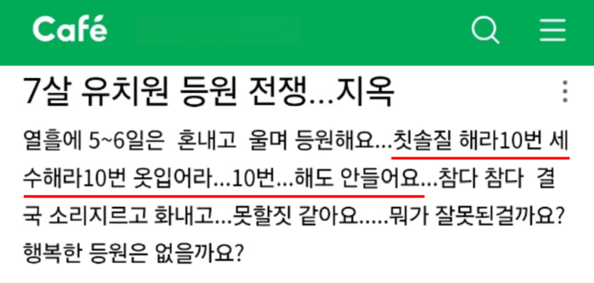
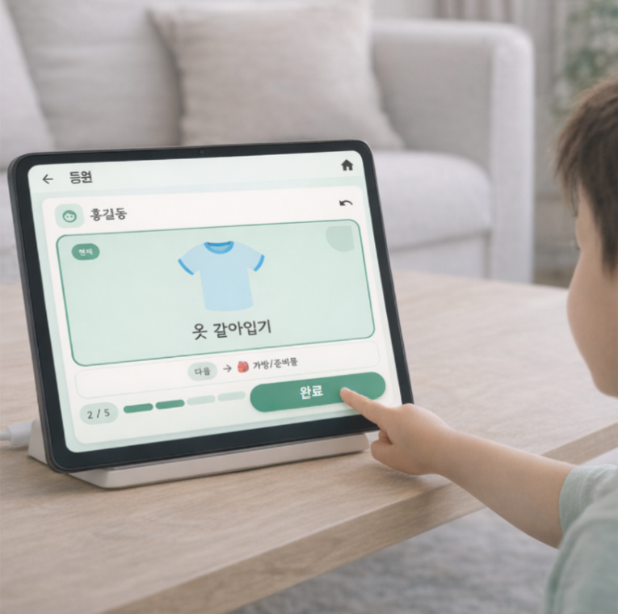
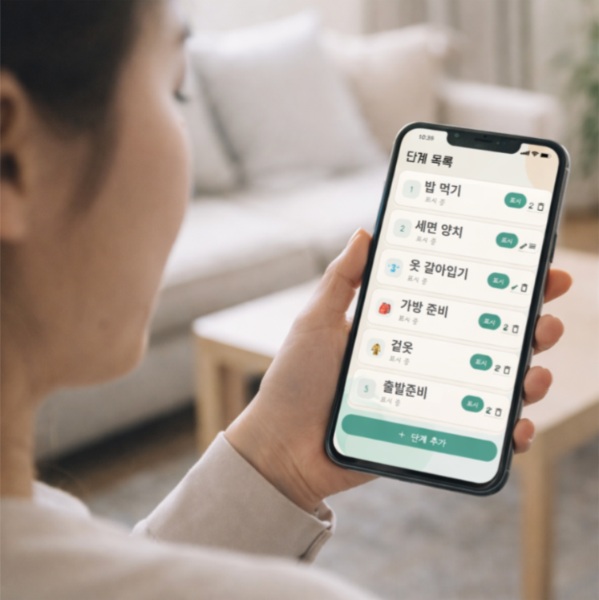
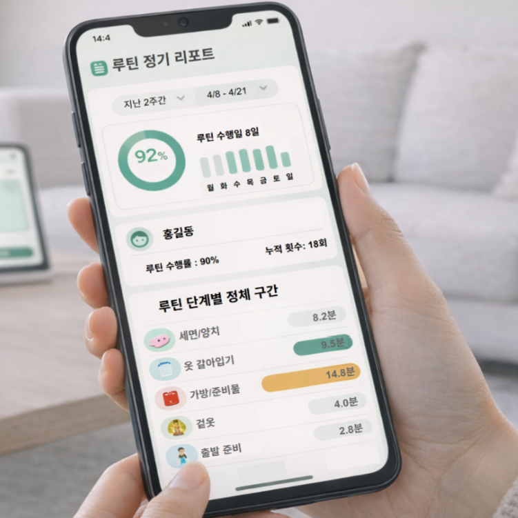
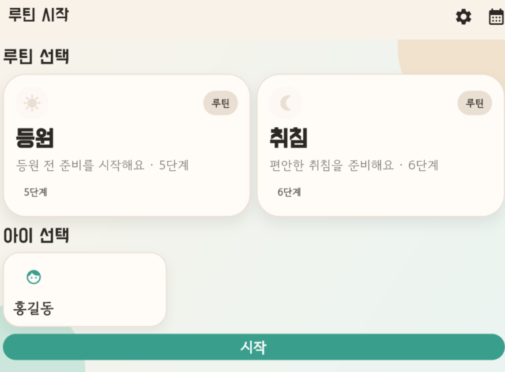
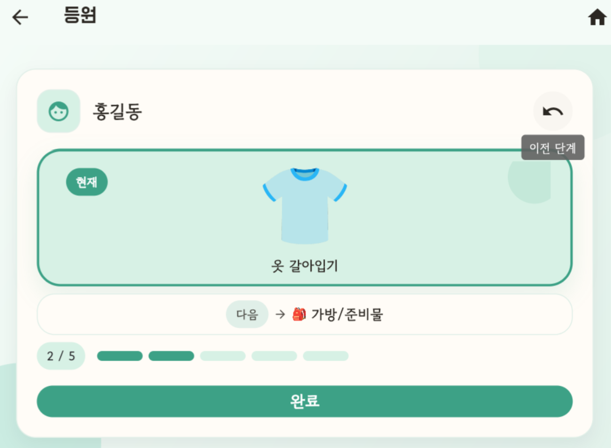
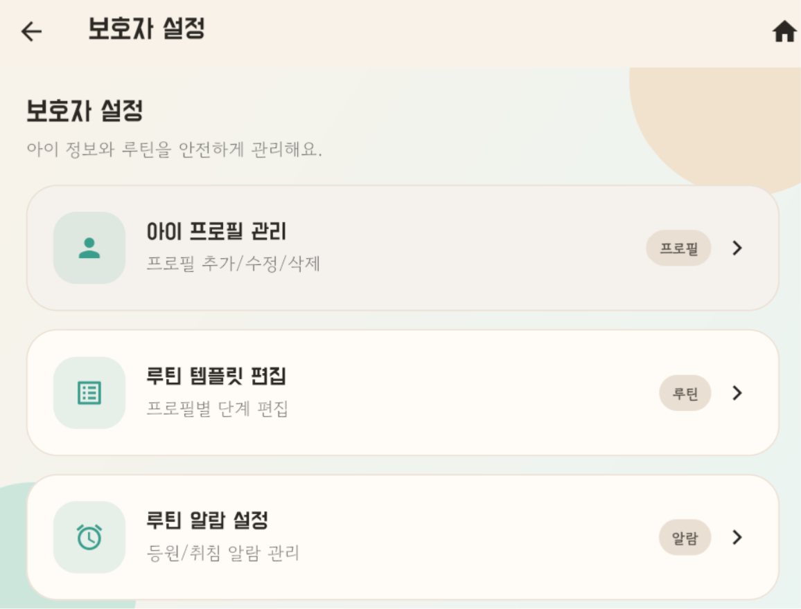

아침과 밤, 이런 순간이 자주 있나요?

등원 준비가 어렵다는 이야기를 자주 봤습니다.
저는 3살 아이를 등원시키는 바쁜 아침에 아이가 잘 따라주지 않아 어려움을 겪었고, 그 경험으로 이 도구를 만들게 되었습니다.
어떻게 쓰는 도구인가요?
루틴 안내 도구를 통해 아이들이 준비 과정을 인지할 수 있게 도와줘요.

화면 순서 안내와 완료 체크
아이에게 다음 단계가 보이고, 완료 체크로 흐름을 이어갑니다.

보호자 루틴 설정
가정 상황에 맞게 등원·취침 루틴을 구성합니다.

리포트 확인(부가)
루틴 흐름과 정체 구간을 사후에 확인할 수 있습니다.
사용 장면 예시
실제 앱 화면으로 준비 흐름을 직관적으로 확인할 수 있습니다.



바쁜 아침, 세수 → 옷 입기 → 가방 챙기기 순서가 화면에 보입니다.
아이는 완료 체크로 다음 단계로 넘어가고, 부모는 진행만 확인합니다.
저녁에는 정리 → 씻기 → 책 읽기 흐름을 따라가며 마무리합니다.
전환이 부드러워지고 반복 재촉이 줄어듭니다.
설문 목적
현재는 판매가 아니라 실제 필요한 가정이 있는지 확인하기 위한 수요조사를
진행 중입니다.
아래 설문을 통해 의견을 남겨주시면 제품 방향을 구체화하는 데 도움이 됩니다.
어떤 가정이 필요한가요?
- 맞벌이 가정
- 다자녀 가정
- 자녀의 루틴 수행에 어려움을 겪는 가정
설문에서 확인하는 내용
- 추가 수요조사 응답
- 후속 안내 및 테스트 참여 가능 여부
응답은 이렇게 사용됩니다
실제 부모 인터뷰와 수요 확인을 바탕으로 기획 중이며, 과장된 성과나 허위 후기는 사용하지 않습니다.
수요조사 응답 정보는 제품 검증과 방향 설정 목적 외에는 사용하지 않으며, 요청 시 삭제됩니다.